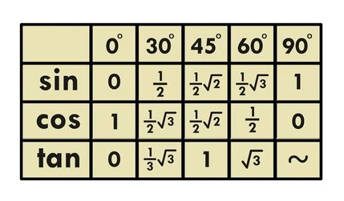
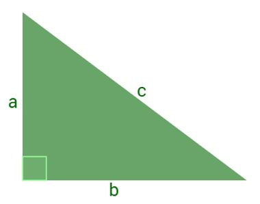

Aplicando las Funciones Trigonométricas
¿En qué se diferencian las Funciones con las Razones Trigonométricas?
Las Razones Trigonométricas son relaciones entre los lados de un Triángulo Rectángulo, mientras que las Funciones Trigonométricas son Funciones Matemáticas que relacionan un ángulo con estas razones, extendiendo su definición a todos los números reales y complejos.
En resumen, las Razones son la base, y las Funciones son la aplicación de esas razones en un contexto más amplio.
Asi que, aquí vamos a tratar con números reales y situaciones reales con lo ya aprendido en las lecciones anteriores...
Enfoque de esta Página
Es un tema bastante amplio en las matemáticas. Abarca muchas ideas, desde el uso de el Círculo unitario, hasta ángulos negativos, identidades complejas y aplicaciones en física, arquitectura, programación y más.
Así que:
No usaremos el Círculo unitario ni ángulos negativos o mayores de 90°, ya que eso se ve en niveles más avanzados...
y nos vamos a concentrar únicamente en las funciones trigonométricas aplicadas a triángulos rectángulos.

(Este es el Círculo Unitario)
Nuestro objetivo es que comprendas bien lo básico, sin complicaciones ni teorías avanzadas que puedan confundirte.
Tabla Trigonométrica
En lugar del Círculo unitario, usaremos la Tabla trigonométrica, una herramienta sencilla que muestra los valores aproximados del seno, coseno y tangente para ángulos comunes (como 0°, 30°, 45°, 60° y 90°).

(Esta es la versión Corta que usarás en clases del profesor Grebil)
La empleamos cuando trabajamos con triángulos rectángulos que tienen ángulos conocidos y queremos calcular lados o razones trigonométricas sin usar calculadora. Es especialmente útil cuando los ángulos son comunes como 30°, 45° o 60°, ya que estos tienen valores trigonométricos fijos que se repiten en muchos ejercicios. También es muy práctica para resolver problemas rápidos en clase, verificar resultados o cuando estás aprendiendo y quieres evitar errores con decimales.
Ejemplo Práctico: Encontrar el valor de un lado de un triángulo rectángulo
Imaginemos que tenemos el siguiente triángulo rectángulo:

Conocemos que, Cateto Opuesto: x , Hipotenusa: 10m, Ángulo recto: 90° y ángulo α:32° Encontremos el valor del Cateto Opuesto "x".
Buscamos la fórmula que contenga la Hipotenusa y el Cateto Opuesto para la resolución... Seno... decimos:
sen(32°) = Cateto Opuesto / Hipotenusa Ó x/10m
10m ∙ sen(32°) = x
10m ∙ 5.3 =x
10m ∙ 0.5299... = x
5.3m = x
Así, obtenemos que: El Cateto Opuesto mide 5.3 m
Para reforzar todos los cononcimientos adquiridos, mira este Video desde Youtube donde se muestra la Resolución de un ejercicio🤩
¡Pon a Prueba tus Conocimientos!
¿Te sientes listo para resolver algunos problemas?
Empezar Ejercicios